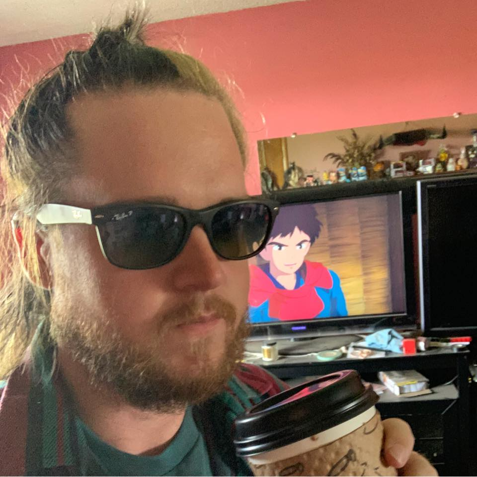

Cameron Ray - Front End Web Developer & Video Marketing Content Creative
Hello, I'm Cameron. My coding journey began at the beginning of 2022, and has quickly become a passion for me. This portfolio quickly showcases some of the projects I've completed to date.

Some of my Projects
Click the project name to view its Repo on Github!
- Hello World - First step in HTML. Project utilizes strictly HTML with no CSS styling.
- My first webpage - A project to practice primarily HTML and Markdown. This project utilizes HTML, CSS, Git, and Markdown in a README file.
- Bane Website - A website to showcase Sergei Rachmaninoff and practice floating elements. A step into CSS styling using HTML and CSS.
- Vacation Destination - Another exploration into HTML and styling with Bootstrap. This utilizes HTML CSS and the Bootstrap framework.
- Branching Project - A simple html page to practice using git to branch code and merge code back into a main branch. This project utilizes HTML, CSS, and Git.
- My Pet Website - A website dedicated to all of my fish which showcases my ability to launch a website utilizing Github Pages and the accumulation of skills through Epicodus. This project utilizes HTML, CSS, Git and Github.
- Blackspire Handbook - This is a personal project for independent study to explore web developement in my free time Prior to my journey at Epicodus. This project utilizes HTML, CSS, PHP, and some testing JQUERY. It is a live website utilized by my Live Action Role Play group to house NPO documentation and rules of play. The live version of the site can be found at Blackspire.site if you are interested.
About Me
Background
Time to tell you a little bit about myself. I'm a 29 year old freelancer living and working out of an 8x30ft tiny house in rural Oregon. I decided to take this programming class at Epicodus to explore the world of coding and software developemnt. I believe full stack developement could be another marketable tool in my arsenal as a freelancer who strives to stay mobile and remote.
I've worked as a content creative for online marketers over the past six years doing primarily videography and editing for the following businesses.
Interests
- Web Development
- Game Development
- Back End Development
Hobbies
- Speedrunning Super Mario 64
- Storybook Brawl
- Amtgard - Competitive Live Action Roleplay
- Competitive Tekken 7
Creative Skills
- 6 years of experience in Adobe editing suite
- 1 year experience in Davinci Resolve including current version
- 10 years of photography and videography experience
- 3 years Lighting, sound, and grip for live and recorded studio
- 2 years Technical Director and switch board operation
Programming Skills